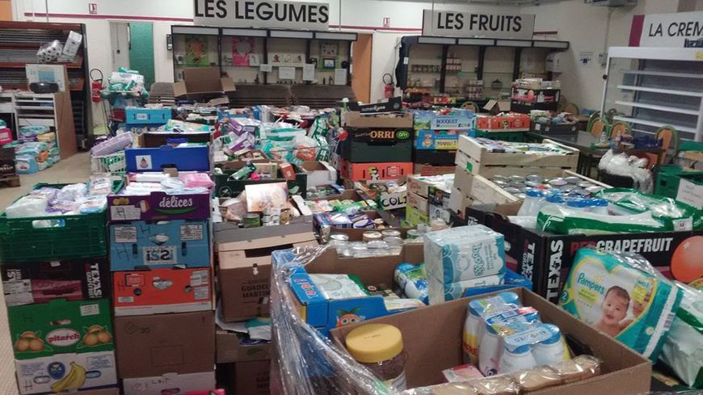
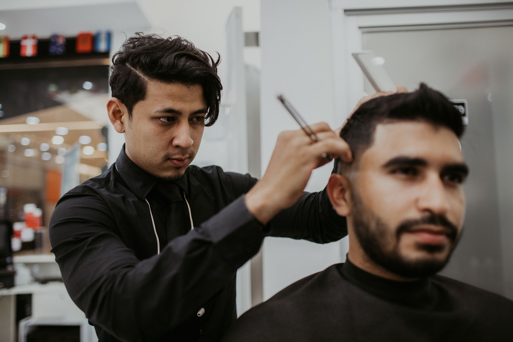

C
e mardi, il est assis à une table avec quatre autres hommes au restaurant Le Gourmand.
Depuis plusieurs années, le restaurateur Paul Richelieu y organise une fois par an un repas de Noël, pour
les personnes précaires. Elles devaient initialement récupérer un ticket auprès de l’association
Sans défense. Même sans ticket, certaines personnes ont été reçues.
Le restaurant est bien chauffé, et donne un cadre très sécurisant pour les personnes accueillies
Je ne m’attendais pas à rencontrer quelqu’un comme Yves parmi les personnes sans domicile fixe.
Une grande barbe blanche, et une calvitie bien présente, caché sous son bonnet.
C’est un solitaire. Il vit depuis 4 ans et demi, sous sa tente, en bivouac.
Tous les soirs, il plante sa tente et la démonte dès l’aube.
Les riverains ont peu de chance de le croiser ou de le repérer, car il change souvent de lieu.
Il avoue quand même avoir ses petites habitudes à Maubeuge.
Pour lui, c’est un coin de l’agglomération plus tranquille, loin de toute violence.
Très sociable, il raconte son choix de vivre en totale liberté.
Sans développer, il explique qu’il est très engagé dans ses relations, et qu’il ne veut pas faire subir ça à son
entourage.
Dans le restaurant, les bénévoles coiffés d’un bonnet rouge et blanc de Noël s’activent pour
faire le service.
Après une soupe en entrée, un gratin dauphinois est servi avec de la viande.
Yves signale alors qu’il n’en mange pas. Sa demande a été prise en compte, sans sourciller, et de plus avec le
sourire.
FeedHungryHelpHomeless
Nourrir les affamés , aider les sans-abri
L
e Homelessness (que l'on pourrait traduire par le "sans-abrisme") peut sembler être un problème lointain qui ne
pourrait
jamais vous toucher personnellement, mais les revers quotidiens laissent de nombreuses personnes sans revenu
ou logement suffisant.
En 2020, on estime qu'en France, 300 000 personnes sont sans abri selon la fondation Abbé Pierre.
La Fondation a comptabilisée environ 185 000 personnes dans les centres d'hébergement, 100 000
dans les lieux d'accueil pour demandeurs d'asile, et 16 000 personnes dans les bidonvilles.
S'y ajoutent les sans-abri, plus difficiles à quantifier, selon son délégué général.
Mais ceux qui ont subi des tragédies personnelles peuvent réussir à revenir à une vie stable avec la gentillesse
et le soutien des autres.
Découvrez quels sont les simples actes de générosité qui peuvent faire une grande différence dans la vie d'une
autre personne.
Bénévole dans un refuge
L
es sans-abri se sentent souvent invisibles pour le public.
Ouvrez votre cœur aux personnes qui souffrent d'une crise personnelle en faisant du bénévolat dans des refuges,
où vous pourrez constater par vous-même que les sans-abri sont des "personnes normales" qui ne doivent pas être
jugées.
Distribuer des fournitures, préparer des repas, encourager, apporter des jouets ou jouer avec les enfants
sont autant de petits gestes qui peuvent aider les autres à se sentir moins seuls et à avoir plus d'espoir et de
soutien.
Faire un don alimentaire

L
es banques alimentaires et les garde-manger communautaires collectent des produits frais et en conserve pour
servir des repas chauds dans les refuges et les soupes populaires locaux.
Contactez les sections locales pour savoir de quels aliments elles ont le plus besoin et achetez des produits
supplémentaires la prochaine fois que vous serez à court de provisions.
Faire un don
E
n donnant de l'argent, des vêtements ou des articles de toilette à des associations de sans-abri tel que la
nôtre, vous pouvez
vous assurer que vos contributions sont utilisées de la manière la plus bénéfique possible.
Les coordinateurs de l'action sociale déconseillent généralement de donner de l'argent directement aux personnes
sans domicile fixe.
Pour avoir un impact encore plus important, demandez la permission d'organiser une collecte à l'école ou de
soutenez notre cause en nous rejoignant.
Nos
Evenements ...
Rejoignez nos nombreux bénévoles.

16 Janvier 2021
Ce samedi 16 janvier de 13h à 17h00 le salon Tweet-Hair coiffera
gratuitement les sans domiciles fixe de 14h00 à 17h00.
Si dans votre rue, votre ville vous rencontrez un SDF, ne soyez pas indifférent, prenez juste
quelques petites minutes de votre temps pour inscrire cette personne aux évenements qui l'interesse.
Nous nous occupons nous-même du transport, une fois inscrit un bus fera le tour de la ville pour conduire
tous le monde au point de rendez-vous.